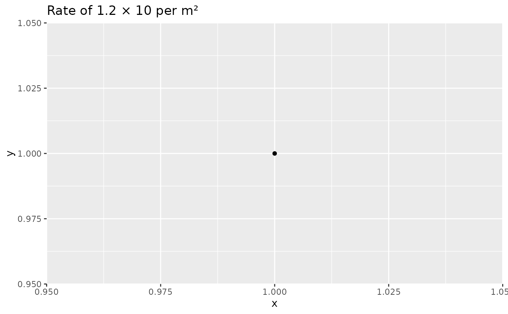

weft() resolves weft's constructs in a character vector from R code, for
the text slots no chunk option reaches: a plot's title and labels, a console
or log message, a table's caption, text printed with results = "asis"
(rule 1.10.10). Each element of x is a block of prose. Everything in it
(values, bare values, governors, claims, guards) is evaluated during the
call, in .envir, so the result holds what they printed: changing a
variable afterwards changes nothing.
Usage
weft(x, .envir = parent.frame())
# S3 method for class 'weft'
as.character(x, ...)
# S3 method for class 'weft'
format(x, target = "plain", ...)
# S3 method for class 'weft'
print(x, ...)
# S3 method for class 'weft'
cli_format(x, style = NULL, ...)
# S3 method for class 'weft'
x[...]
# S3 method for class 'weft'
x[[i, ...]]
# S3 method for class 'weft'
sort(x, decreasing = FALSE, ...)
# S3 method for class 'weft'
c(...)
# S3 method for class 'weft'
x[i] <- value
# S3 method for class 'weft'
x[[i]] <- value
# S3 method for class 'weft'
is.na(x) <- value
# S3 method for class 'weft'
knit_print(x, options = NULL, inline = FALSE, ...)Arguments
- x
A character vector of markup (a factor is read as its labels), or a
weftobject, which is returned as it is. AnNAelement staysNA.- .envir
The environment the markup's code is evaluated in.
- ...
Not used.
- target
For
format():"plain"(the default),"markdown"or"ansi"(the console form, see "In the console and in cli").- style
Not used (for
cli_format()).- i
An index.
- decreasing
Passed to
sort().- value
The new elements:
weftobjects or character vectors.- options
Passed by knitr.
- inline
For
knit_print():TRUEfor inline R.
Details
The result is a weft object, a character vector with two forms of each
element. Its content is the plain text (Unicode, no markup: m^2,
1.2 x 10^-4, emphasis without its marks, rule 1.4.24), so
anything that reads a character vector (cat(), nchar(), paste(), a
ggplot2 title) gets readable text. The attribute markdown holds the
markdown text. as.character() and format() give the plain text;
format(x, target = "markdown") gives the markdown; printing the object in a
knit, or as inline R, writes the markdown. [, [[ and rev() keep both
forms; c() and [<- take weft objects (both forms) and character
vectors (text as it is: not markup, not evaluated); rep(), unique() and
sort() give a plain character vector. A weft object given as a value
inside the markup of another, or to an fmt_*(), contributes its markdown.
A caption option that R computes as a weft object (fig.cap = weft(...),
#| fig-cap: !expr weft(...)) is given to knitr as markdown (as plain text
for fig.alt). knitr::kable(caption = weft(...)) gets the plain text.
The plain text of a weft object uses Unicode superscripts and the minus
sign, which the pdf() device cannot draw: for a plot with weft text that
is saved as PDF, use cairo_pdf() or a ragg device.
cat() in a results = "asis" chunk writes plain text; to write markdown,
leave the object as a top-level value in a chunk (knitr then calls knit_print())
or use cat(format(x, target = "markdown")); an explicit print() writes plain text.
In the console and in cli
The console form of a weft text is its plain text with emphasis in italic,
strong emphasis in bold (both for ***) and each failure marker in bold
red; with the styles removed it is the plain text. A superscript or subscript
with Unicode characters takes no style, and an element joined by c() or
[<-, or changed by a function, is plain. format(x, target = "ansi") gives
it, and print() writes it, but only where cli would write its own styles
(cli::num_ansi_colors(); print() asks about stdout(), and about cli's
own count as well under a sink): not under
NO_COLOR, in a knit, into a sink or on a terminal without colour. format(x)
and as.character(x) are always plain.
In a cli message, {.val {x}} draws the console form, unquoted, in cli's value
colour (cli_format(), which returns a bare character vector), and {x} gives
the plain text. A weft object given to cli as a value is never read as a
template, so braces in it are text; given as the template itself
(cli_inform(x)) it is read by cli, which evaluates what is in braces, so pass
it as "{x}". Use {.val {x}} alone: {.val text {x}} pastes the value
and quotes it. Markup is not written into a cli template: resolve it with
weft() first.
w <- weft("Depth at *[one site | # sites]{n='k'}*: `r d`{.num unit='m'}")
cli::cli_inform("{.val {w}}") # emphasis drawn, in the value colour
cli::cli_inform("Plotted {w}") # plain text
msg <- cli::format_inline("{.val {w}}")During a knit with weft active a failed check, a missing value or a value
error is collected as it is in prose (rules 2.4.1, 3.6.3) and marked in the
text with the chunk that holds the call, or the line of the inline R (rule
2.6.8). Outside a knit, and in a knit where weft_setup() was not called, the
first failure stops at once, with the class of the failure
(weft_claim_failed, weft_no_value, weft_value_error,
weft_construct_error); draft mode has no effect there. A warning is
signalled at the call and the object is returned.
Outside a knit, the configuration is that of the project root of the working
directory (the nearest folder upward that holds _weft.yml, else
_quarto.yml or _quarto.yaml, else the working directory). It is read once and kept for the
session, and read again when _weft.yml appears, disappears or changes size
or modification time. A _weft.yml with an error is a weft_config_error.
A named value in the markup, `depth`{.num}, is read from .envir
(rule 1.12.12): the call looks the name up in .envir and its enclosing
environments as far as the global environment, never in base R, a
namespace or an attached package, and prints it as `r depth`{.num}
would. A name that is not bound there, or is bound to a function, is a "no
value" failure; nothing is left for a filter, because the text goes to
plots and consoles where none runs. In a loop, each call reads the names as
they stand.
Block-only constructs do not apply; each element is read as inline markup.
Bare inline R in a string is evaluated as knitr evaluates it (rule 1.1.8).
The functions inline code calls by name (claim(), plural(), the
fmt_*() functions) are visible to the markup even when weft is not
attached; a function of the same name that .envir can see wins.
Examples
n_sites <- 3
w <- weft("Found [a site | # sites]{n=\"n_sites\"} of *Eucalyptus* on 5 m^2^.")
as.character(w)
#> [1] "Found 3 sites of Eucalyptus on 5 m²."
format(w, target = "markdown")
#> [1] "Found 3 sites of *Eucalyptus* on 5 m^2^."
# one title for each site, each keeping its own value
titles <- lapply(c(2, 5), function(k) weft("Depth at `r k`{.num} sites"))
vapply(titles, as.character, "")
#> [1] "Depth at 2 sites" "Depth at 5 sites"
if (requireNamespace("ggplot2", quietly = TRUE)) {
ggplot2::ggplot(data.frame(x = 1, y = 1), ggplot2::aes(x, y)) +
ggplot2::geom_point() +
ggplot2::labs(title = weft("Rate of 1.2 × 10 per m^2^"))
}
